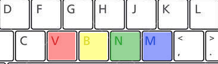

<!DOCTYPE html>
<html>
  <head>

    <meta charset="UTF-8">
    <meta name="description" content="jsPsych Cognitive task">
    <meta name="keywords" content="HTML, CSS, JavaScript">
    <meta name="author" content="Jason Steffener, NCMLab">
    <meta name="viewport" content="width=device-width, initial-scale=1.0">
    <title>NCM Lab: Stroop</title>
    <script src="jspsych-6.2.0/jspsych.js"></script>
    <script src="jspsych-6.2.0/plugins/jspsych-html-keyboard-response.js"></script>
    <script src="jspsych-6.2.0/plugins/jspsych-image-keyboard-response.js"></script>
    <script src="Stroop_ColorWord.js"></script>
    <script src="StroopSetup.js"></script>
    <link href="jspsych-6.2.0/css/jspsych.css" rel="stylesheet" type="text/css">
    <script src="/assets/javascripts/jatos.js"></script>
    <style>
      .stimulus { font-size: 60px; }
    </style>
  </head>
  <body style="background-color:rgb(150,150,150);"></body>
  <script>
	/*<?php
		$post_data = json_decode(file_get_contents('php://input'), true); 
		// the directory "data" must be writable by the server
		$name = "data/".$post_data['filename'].".csv"; 
		$data = $post_data['filedata'];
		// write the file to disk
		file_put_contents($name, $data);
		?>*/

  	    /* create timeline */

    var timeline = [];

    /* define welcome message trial */
    var welcome = {
      type: "html-keyboard-response",
      stimulus: ColorWelcome
    };

    var PracticeInstructions = {
      type: "html-keyboard-response",
      stimulus : function(){
        var temp = PutIntoTable('<p style="font-size:30px">Instructions</p>','<p style="font-size:30px">You will see a colored rectangle. Press the key corresponding to the color you see. The keys are shown below. You will first start with some practice trials where you will receive feedback. Try to respond as quickly and accurately as possible.</p>')
        return temp;
      }
    }

    var TestInstructions = {
      type: "html-keyboard-response",
      stimulus : function(){
        var temp = PutIntoTable('<p style="font-size:30px">Instructions</p>','<p style="font-size:30px">You will see a colored rectangle. Press the key corresponding to teh color you see. The keys are shown below. You will now respond without any feedback. Try to respond as quickly and accurately as possible. </p>')
        return temp;
      }
    }

    
    /* define thank you trial */
    var thank_you = {
    	type: "html-keyboard-response",
    	stimulus: "Thank you for participanting. Press any key to end."
    };


    var Stimulus = {
          type: 'html-keyboard-response',
          stimulus: function()
          { 
            var Stim = '<svg width="400" height="100"><rect width="400" height="100" style="fill:rgb'+jsPsych.timelineVariable('Color', true)+'; stroke-width:3;stroke:rgb(0,0,0)" /></svg>'
            var temp = PutIntoTable('',Stim)
            return temp;
            //return '<p class="stimulus" style="color:rgb'+jsPsych.timelineVariable('Color', true)+';">' +jsPsych.timelineVariable('Word', true)+'</p>'; 
          },


          choices: ['v','b','n','m',27],
          post_trial_gap: 0,
          data: {
            Correct: jsPsych.timelineVariable('Correct')
          },
        on_finish: function(data){
          data.correct = data.key_press == jsPsych.pluginAPI.convertKeyCharacterToKeyCode(data.Correct);
          // This used later on to filter trials
          data.type = 'trial';
          /* If the N key is pressed the current timeline is ended and the thank you screen is shown */
          if (data.key_press == 27) {
            //jsPsych.endCurrentTimeline();
            jsPsych.end();
          }
        },
      }


  	var fixation = {
  	  type: 'html-keyboard-response',
  	  stimulus: function(){
        var temp = PutIntoTable('','+')
        return temp;
      },
        //return '<div style="font-size:60px;">+</div><p><p>'},
  	  choices: jsPsych.NO_KEYS,
  	  trial_duration: 500,//function(){
          /*return jsPsych.randomization.sampleWithoutReplacement([250, 500, 750, 1000, 1250, 1500, 1750, 2000], 1)[0];*/
        //},
      data: {test_part: 'fixation'}
  	}
/* ARROWS 37 = left, 38 = up, 39 = right, 40 = down */
/* Escape = 27 */ 
    var feedback = {
      type: 'html-keyboard-response',
      trial_duration: 400,
      stimulus: function(){
        var last_trial_correct = jsPsych.data.get().last(1).values()[0].correct;
        if(last_trial_correct){
            var temp = PutIntoTable('','Correct!')
            return temp;
        } else {
            var temp = PutIntoTable('','Incorrect')
            return temp;;
        }
      }
    }
    // Define a practie procedure which provides feedback
    var practice_procedure = {
      timeline: [fixation, Stimulus, feedback],
      timeline_variables: StroopWordList,
      sample: {
        type: 'fixed-repetitions',
        size: 1, 
      }
    }
    // Define the test procedure which does NOT provide feedback
    var test_procedure = {
      timeline: [fixation, Stimulus],
      timeline_variables: StroopWordList,
      sample: {
        type: 'fixed-repetitions',
        size: 1, 
      }
    }
    // Prepare debriefing for after the practice trials
    var debrief = {
        type: "html-keyboard-response",
          stimulus: function() {
            var total_trials = jsPsych.data.get().filter({type: 'trial'}).count();
            
            var accuracy = Math.round(jsPsych.data.get().filter({correct: true}).count() / total_trials * 100);
            if (accuracy < 0.5){
              timeline.push(PracticeInstructions);
            } else {
              timeline.push(TestInstructions);
            }
            return "<p>You responded correctly on <strong>"+accuracy+"%</strong> of the "+total_trials+" trials.</p> " +
            "<p>Press any key to complete the experiment. Thank you!</p>";
            
          }
        };
  // This a conditional block which checks to see if the performance during practice was good enough
  // if performance on the practice is above 50% accurate then the test procedure is done.
  // otherwise practice is done again
  var if_node = {
    timeline: [PracticeInstructions, practice_procedure],
    conditional_function: function(){
      // check performance on the practice
        var total_trials = jsPsych.data.get().filter({type: 'trial'}).count();
        var accuracy = Math.round(jsPsych.data.get().filter({correct: true}).count() / total_trials * 100);
        if (accuracy < 50) {
          return true;
        } else {
          return false;
        }
    }
  }


  // Say hello
	timeline.push(welcome);
  // Provide instructions for practice 
  timeline.push(PracticeInstructions);
  // run the practice trials
  timeline.push(practice_procedure);
  // provide feedback as to their performance
  timeline.push(debrief);
  // decide if the person did well enough
  timeline.push(if_node);
  // decide if the person did well enough
  timeline.push(if_node);
  // run the test
  timeline.push(TestInstructions);
  timeline.push(test_procedure);
  timeline.push(thank_you);
  // After practice check the accuracy and decide if another practice session should be performed
//  timeline.push(TestInstructions);
//	timeline.push(test_procedure);
//	timeline.push(thank_you);
    /* start the experiment */
  //jatos.onLoad(function() {  
    jsPsych.init({
      	timeline: timeline,
        /* this adds a fixed amount of time between every trial on the screen
        this is between fixation and the start of a trial and between that trial and the next fixation
        */

      });
    //});
  </script>
</html>